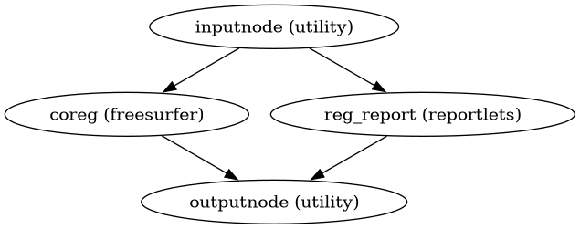

dmriprep.workflows.dwi.registration module
DWI-to-anatomical registration workflows.
These workflows estimate the transform between DWI and anatomical (T1w/T2w) spaces without applying it, following the fit/transform architecture.
- dmriprep.workflows.dwi.registration.init_dwi_reg_wf(*, freesurfer=False, use_bbr=None, dwi2anat_dof=6, dwi2anat_init='t1w', omp_nthreads=1, name='dwi_reg_wf')View on GitHub
Build a workflow to register DWI reference to anatomical space.
This workflow computes the transform from DWI reference space to anatomical (T1w or T2w) space. When FreeSurfer outputs are available, boundary-based registration (BBR) is used for improved accuracy.
- Workflow Graph

(Source code, png, svg, pdf)
- Parameters:
freesurfer – Whether FreeSurfer outputs are available for BBR.
use_bbr – Force or disable BBR. If None, BBR is used when FreeSurfer outputs are available, with fallback to rigid registration.
dwi2anat_dof – Degrees of freedom for registration (default: 6 = rigid).
dwi2anat_init – Initialization method (‘t1w’ or ‘t2w’).
omp_nthreads – Number of threads for parallel processing.
name – Workflow name.
- Inputs:
dwi_ref – DWI reference image (SDC-corrected if fieldmap available).
dwi_mask – Brain mask in DWI space.
t1w_brain – Skull-stripped T1w image.
t1w_dseg – Tissue segmentation in T1w space.
subjects_dir – FreeSurfer subjects directory.
subject_id – FreeSurfer subject ID.
fsnative2t1w_xfm – Transform from FreeSurfer native to T1w space.
- Outputs:
dwiref2anat_xfm – Transform from DWI reference to anatomical space.
anat2dwiref_xfm – Inverse transform (anatomical to DWI reference).
fallback – Whether BBR failed and registration fell back to rigid.
out_report – Registration reportlet for QC.
{kind=link}
{kind=link}
- dmriprep.workflows.dwi.registration.init_dwi_t2w_reg_wf(*, omp_nthreads=1, name='dwi_t2w_reg_wf')View on GitHub
Build a workflow to register DWI reference to T2w space.
T2w images often provide better contrast matching for DWI registration due to similar signal characteristics. This workflow can be used as an intermediate step for DWI-to-T1w registration.
- Parameters:
omp_nthreads – Number of threads for parallel processing.
name – Workflow name.
- Inputs:
dwi_ref – DWI reference image.
dwi_mask – Brain mask in DWI space.
t2w_preproc – Preprocessed T2w image.
t2w_mask – Brain mask in T2w space.
- Outputs:
dwiref2t2w_xfm – Transform from DWI reference to T2w space.